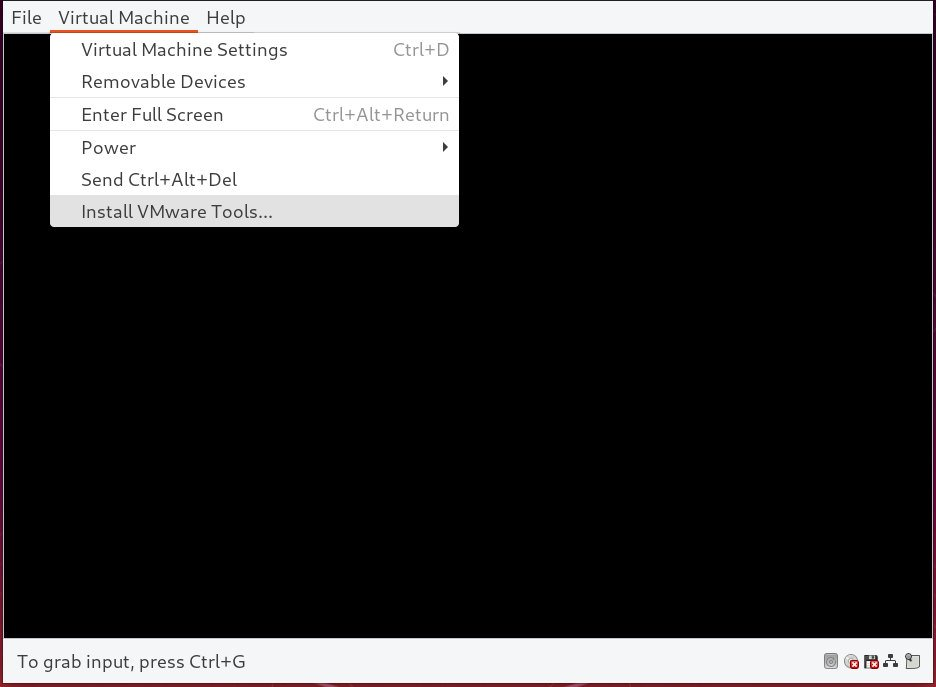

在 Ubuntu 18.04 中安装 VMware Tools
VMware 是一种成熟且稳定的虚拟化解决方案，可让您在一台计算机上运行多个独立的操作系统。
当使用 VMware 作为虚拟机管理程序时，在客户机中安装 VMware Tools 以提高虚拟机性能很重要。 VMware Tools 提供了一些有用的功能，例如更快的图形性能，共享的文件夹，共享的剪贴板，拖放操作等等。
本教程说明了如何在 Ubuntu 18.04 客户机虚拟机上安装 VMware Tools 软件包。相同的说明适用于 Ubuntu 16.04 和任何其他基于 Ubuntu 的发行版，包括 Linux Mint 和 Elementary OS 。
使用 Open VM Tools 安装 VMware Tools
在 Ubuntu 客户机虚拟机上安装 VMware Tools 的最简单和建议的方法是从 Ubuntu 的默认存储库安装 Open VM Tools 软件包。
Open VM Tools 是适用于 Linux 客户机操作系统的 VMware Tools 的开源实现。
VMware Tools 分为两个软件包，分别用于无头系统的 open-vm-tools 和用于台式机系统 open-vm-tools-desktop 。根据配置实例的方式，默认情况下可能会安装 Open VM Tools 软件包。
运行以下命令以在 Ubuntu 服务器客户机上安装 VMware Tools ：
sudo apt update
sudo apt install open-vm-tools
如果您正在运行 Ubuntu Desktop ，请运行以下命令来安装 VMware Tools ：
sudo apt update
sudo apt install open-vm-tools-desktop
现在，您已在 Ubuntu 虚拟机上成功安装了 VMware Tools 。
发布新版本的 Open VM Tools 时，您可以通过桌面标准软件更新工具或在终端中运行以下命令来更新软件包：
sudo apt update && sudo apt upgrade
使用 VMware Tools ISO 文件安装 VMware Tools
VMware 附带一个映像 ISO 文件，该映像包含所有受支持的客户机操作系统的 VMware Tools 安装程序。该文件位于主机上，可以从 VMware GUI 菜单挂载在客户机系统上。挂载后，即可开始在客户机系统上安装 VMware Tools 。
以下是在 Ubuntu 客户机虚拟机上安装 VMware Tools 的分步说明。这些步骤将适用于 Ubuntu 桌面和 Server 客户机安装。
-
打开 VMware Workstation, Fusion 或者 Player 。
-
启动 Ubuntu 客户机虚拟机。
-
从 VMware 菜单中，单击“虚拟机 ”->“ 安装 VMware Tools …”-> ，如下图所示：

如果使用的是 VMware Player ，将提示您下载 VMware Tools 。
-
以 sudo 用户身份登录 Ubuntu 客户机，并创建一个新目录作为 CD 驱动器的挂载点并挂载 ISO 文件：
sudo mkdir -p /mnt/cdrom sudo mount /dev/cdrom /mnt/cdrom -
导航到目录并解压缩
VMwareTools-x.x.x-xxx.tar.gz， 这里面包含了 VMware Tools 安装程序的文件：
```sh
cd /mnt/cdrom
sudo tar xf VMwareTools-*.tar.gz -C /tmp
```
-
运行
vmware-install.pl脚本来安装 VMware Tools ：sudo /tmp/vmware-tools-distrib/vmware-install.pl -d-d选项将告诉安装程序接受默认选项。 -
重新引导 Ubuntu 客户机虚拟机，以使更改生效：
sudo shutdown -r now
结论
在 Ubuntu 18.04 虚拟机上安装 VMware Tools 是一件容易的事。 VMware Tools 将优化客户机操作系统，以提高性能并增强可用性。
要查找有关 VMware Tools 的更多信息，请访问正式的 VMware 文档页面。